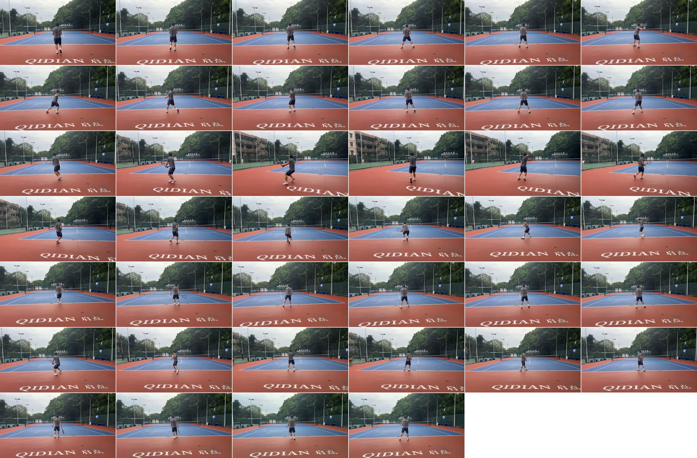
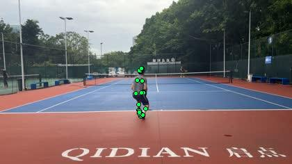

对应证据


1. 准备节奏仍然偏晚
表现
- 很多回合里，身体在对方触球前后没有稳定进入轻弹、可启动的 ready posture。
- 来球方向明确后才明显启动，第一步更像追球反应，而不是预先准备后的启动。
- 当球速、落点或节奏稍微变化时，你会先站直观察，再开始移动，这会压缩后面的侧身和挥拍时间。
影响
- 表面看是脚步慢，实际是启动晚导致后面所有动作都被挤压。
- 第一启动步晚，会让你到球后只能用上半身和手臂补偿。
- 下一拍开始时如果还没完成准备，连续回合会越来越被动。
训练重点
先把“对手触球时完成垫步或轻弹”固定下来，不要等球已经飞过网才开始真正启动。训练中宁愿打慢，也要每一球都出现准备、启动、侧身的顺序。